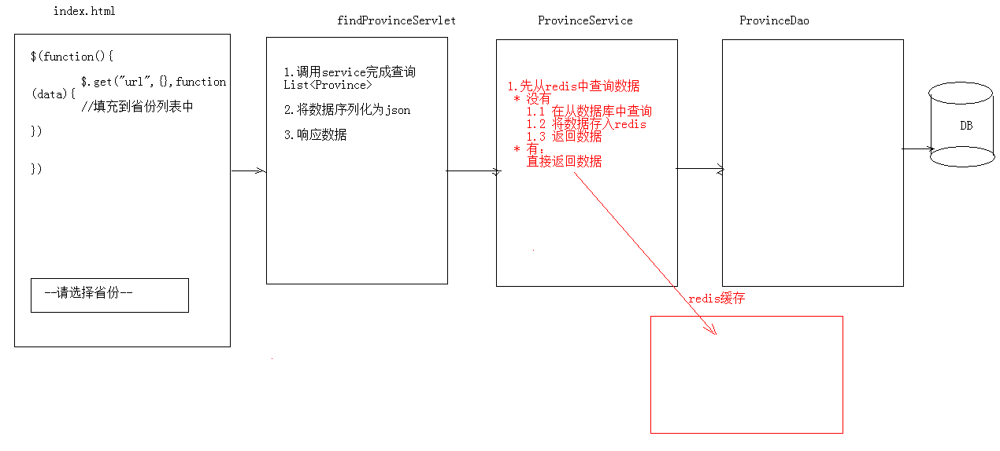
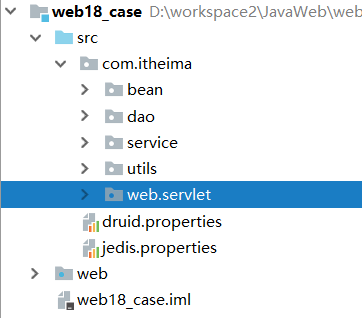
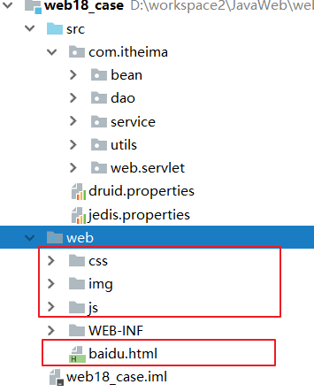
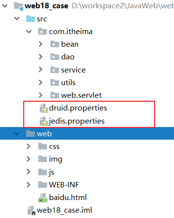
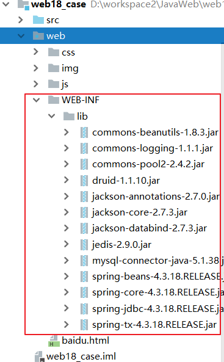

01-Redis数据库一. 今日目标二. 今日内容(一) NOSQL相关概念1. 什么是NOSQL?2. NOSQL和关系型数据库3. 主流的NOSQL产品(二) Redis相关概念1. Redis概述2. Redis支持的数据类型3. Redis的应用场景4. Redis下载安装(三) Redis命令操作1. redis的数据结构字符串类型 string1. 存储: set key value2. 获取: get key3. 删除: del key哈希类型 hash1. 存储: hset key field value2. 获取:hget key field/hgetall key3. 删除: hdel key field列表类型 list1. 添加:lpush key value/rpush key value2. 获取:lrange key start end3. 删除:集合类型 set 1. 存储:sadd key value2. 获取:smembers key:获取set集合中所有元素3. 删除:srem key value:删除set集合中的某个元素有序集合类型 sortedset1. 存储:zadd key score value2. 获取:zrange key start end [withscores]3. 删除:zrem key value通用命令2. Redis持久化机制RDB快照方案AOF日志追加方案(四) Java客户端 Jedis1. 使用步骤2. JAVA操作Redis字符串类型 : string(熟悉)哈希类型 hash : map格式(熟悉)列表类型 list : LinkedList。支持重复元素 (熟悉)集合类型 set : 不允许重复元素(熟悉)有序集合类型 sortedset:不允许重复元素，且元素有顺序 (熟悉)3. jedis连接池JedisPool使用连接池工具类(五) 案例:异步加载省份数据(掌握)1. 需求2. 分析3. 准备4. 实现WEB层(Servlet)业务层(Service)数据访问层(Dao)客户端baidu.html使用Redis缓存优化代码业务层WEB层
Redis是一款高性能的NOSQL系列的非关系型数据库
xNoSQL(NoSQL = Not Only SQL)，意即“不仅仅是SQL”，是一项全新的数据库理念，泛指非关系型的数据库。随着互联网web2.0网站的兴起，传统的关系数据库在应付web2.0网站，特别是超大规模和高并发的SNS类型的web2.0纯动态网站已经显得力不从心，暴露了很多难以克服的问题，而非关系型的数据库则由于其本身的特点得到了非常迅速的发展。NoSQL数据库的产生就是为了解决大规模数据集合多重数据种类带来的挑战，尤其是大数据应用难题。
优点
xxxxxxxxxx1）成本:nosql数据库简单易部署，基本都是开源软件，不需要像使用oracle那样花费大量成本购买使用，相比关系型数据库价格便宜。2）查询速度:nosql数据库将数据存储于缓存之中，关系型数据库将数据存储在硬盘中，自然查询速度远不及nosql数据库。3）存储数据的格式:nosql的存储格式是key,value形式、文档形式、图片形式等等，所以可以存储基础类型以及对象或者是集合等各种格式，而数据库则只支持基础类型。4）扩展性:关系型数据库有类似join这样的多表查询机制的限制导致扩展很艰难。
缺点
xxxxxxxxxx1）维护的工具和资料有限，因为nosql是属于新的技术，不能和关系型数据库10几年的技术同日而语。2）不提供对sql的支持，如果不支持sql这样的工业标准，将产生一定用户的学习和使用成本。3）不提供关系型数据库对事务的处理。
总结
xxxxxxxxxx关系型数据库与NoSQL数据库并非对立而是互补的关系，即通常情况下使用关系型数据库，在适合使用NoSQL的时候使用NoSQL数据库，让NoSQL数据库对关系型数据库的不足进行弥补。一般会将数据存储在关系型数据库中，在nosql数据库中备份存储关系型数据库的数据
键值(Key-Value)存储数据库
xxxxxxxxxx相关产品: Tokyo Cabinet/Tyrant、Redis、Voldemort、Berkeley DB典型应用: 内容缓存，主要用于处理大量数据的高访问负载。数据模型: 一系列键值对优势: 快速查询劣势: 存储的数据缺少结构化
列存储数据库
xxxxxxxxxx相关产品:Cassandra, HBase, Riak典型应用:分布式的文件系统数据模型:以列簇式存储，将同一列数据存在一起优势:查找速度快，可扩展性强，更容易进行分布式扩展劣势:功能相对局限
文档型数据库
xxxxxxxxxx相关产品:CouchDB、MongoDB典型应用:Web应用（与Key-Value类似，Value是结构化的）数据模型: 一系列键值对优势:数据结构要求不严格劣势: 查询性能不高，而且缺乏统一的查询语法
图形(Graph)数据库
xxxxxxxxxx相关数据库:Neo4J、InfoGrid、Infinite Graph典型应用:社交网络数据模型:图结构优势:利用图结构相关算法。劣势:需要对整个图做计算才能得出结果，不容易做分布式的集群方案。
xxxxxxxxxxRedis是用C语言开发的一个开源的高性能键值对（key-value）数据库，官方提供测试数据，50个并发执行100000个请求,读的速度是110000次/s,写的速度是81000次/s ，且Redis通过提供多种键值数据类型来适应不同场景下的存储需求
xxxxxxxxxx目前为止Redis支持的键值数据类型如下:1. 字符串类型 string2. 哈希类型 hash3. 列表类型 list4. 集合类型 set5. 有序集合类型 sortedset
xxxxxxxxxx1. 缓存（数据查询、短连接、新闻内容、商品内容等等）2. 聊天室的在线好友列表3. 任务队列。（秒杀、抢购、12306等等）4. 应用排行榜5. 网站访问统计6. 数据过期处理（可以精确到毫秒)7. 分布式集群架构中的session分离
xxxxxxxxxx1. 官网:https://redis.io2. 中文网:http://www.redis.net.cn/3. 解压直接可以使用:* redis.windows.conf:配置文件* redis-cli.exe:redis的客户端* redis-server.exe:redis服务器端
xxxxxxxxxx* redis存储的是:key,value格式的数据，其中key都是字符串，value有5种不同的数据结构* value的数据结构:1) 字符串类型 string2) 哈希类型 hash : map格式3) 列表类型 list : linkedlist格式。支持重复元素4) 集合类型 set : 不允许重复元素5) 有序集合类型 sortedset:不允许重复元素，且元素有顺序
set key valuexxxxxxxxxx127.0.0.1:6379> set username zhangsanOK
get keyxxxxxxxxxx127.0.0.1:6379> get username"zhangsan"
del keyxxxxxxxxxx127.0.0.1:6379> del age(integer) 1
hset key field valuexxxxxxxxxx127.0.0.1:6379> hset myhash username lisi(integer) 1127.0.0.1:6379> hset myhash password 123(integer) 1
hget key field/hgetall keyhget key field: 获取指定的field对应的值
xxxxxxxxxx127.0.0.1:6379> hget myhash username"lisi"
hgetall key:获取所有的field和value
xxxxxxxxxx127.0.0.1:6379> hgetall myhash1) "username"2) "lisi"3) "password"4) "123"
hdel key fieldxxxxxxxxxx127.0.0.1:6379> hdel myhash username(integer) 1
可以添加一个元素到列表的头部（左边）或者尾部（右边）
lpush key value/rpush key valuelpush key value: 将元素加入列表左表
xxxxxxxxxx127.0.0.1:6379> lpush myList a(integer) 1127.0.0.1:6379> lpush myList b(integer) 2
rpush key value:将元素加入列表右边
xxxxxxxxxx127.0.0.1:6379> rpush myList c(integer) 3
lrange key start endlrange key start end :范围获取
xxxxxxxxxx127.0.0.1:6379> lrange myList 0 -1"b""a""c"
lpop key: 删除列表最左边的元素，并将元素返回
xxxxxxxxxx127.0.0.1:6379> lpop myList"b"
rpop key: 删除列表最右边的元素，并将元素返回
xxxxxxxxxx127.0.0.1:6379> rpop myList"c"
xxxxxxxxxx127.0.0.1:6379> sadd myset a(integer) 1127.0.0.1:6379> sadd myset a(integer) 0
xxxxxxxxxx127.0.0.1:6379> smembers myset"a"
xxxxxxxxxx127.0.0.1:6379> srem myset a(integer) 1
不允许重复元素，且元素有顺序.每个元素都会关联一个double类型的分数。redis正是通过分数来为集合中的成员进行从小到大的排序。
xxxxxxxxxx127.0.0.1:6379> zadd mysort 60 zhangsan(integer) 1127.0.0.1:6379> zadd mysort 50 lisi(integer) 1127.0.0.1:6379> zadd mysort 80 wangwu(integer) 1
xxxxxxxxxx127.0.0.1:6379> zrange mysort 0 -1"lisi""zhangsan""wangwu"127.0.0.1:6379> zrange mysort 0 -1 withscores"zhangsan""60""wangwu""80""lisi""500"
xxxxxxxxxx127.0.0.1:6379> zrem mysort lisi(integer) 1
xxxxxxxxxx1. `keys *` : 查询所有的键2. `type key` : 获取键对应的value的类型3. `del key`:删除指定的key value
redis是一个内存数据库，当redis服务器重启，获取电脑重启，数据会丢失，我们可以将redis内存中的数据持久化保存到硬盘的文件中。
xxxxxxxxxx默认方式，不需要进行配置，默认就使用这种机制, 在一定的间隔时间中，检测key的变化情况，然后持久化数据1. 编辑`redis.windwos.conf`文件# after 900 sec (15 min) if at least 1 key changedsave 900 1# after 300 sec (5 min) if at least 10 keys changedsave 300 10# after 60 sec if at least 10000 keys changedsave 60 100002. 重新启动redis服务器，并指定配置文件名称`D:\JavaWeb2018\day23_redis\资料\redis\windows-64\redis-2.8.9>redis-server.exe redis.windows.conf`
xxxxxxxxxx日志记录的方式 , 可以记录每一条命令的操作。可以每一次命令操作后，持久化数据1. 编辑`redis.windwos.conf`文件appendonly no（关闭aof） --> appendonly yes （开启aof）# appendfsync always : 每一次操作都进行持久化appendfsync everysec : 每隔一秒进行一次持久化# appendfsync no : 不进行持久化
Jedis: 一款java操作redis数据库的工具.
xxxxxxxxxx1. 下载jedis的jar包2. 在项目中导入jar包3. 获取与Redis的连接 Jedis jedis = new Jedis("localhost",6379);4. 完成CRUD操作 jedis.set("username","zhangsan");5. 关闭连接 jedis.close();
xxxxxxxxxx/** * string 数据结构操作 */public void test2(){ //1. 获取连接 Jedis jedis = new Jedis();//如果使用空参构造，默认值 "localhost",6379端口 //2. 操作 //存储 jedis.set("username","zhangsan"); //获取 String username = jedis.get("username"); System.out.println(username); //可以使用setex()方法存储可以指定过期时间的 key value jedis.setex("activecode",20,"hehe");//将activecode:hehe键值对存入redis，并且20秒后自动删除该键值对 //3. 关闭连接 jedis.close();}xxxxxxxxxx/** * hash 数据结构操作 */public void test3(){ //1. 获取连接 Jedis jedis = new Jedis();//如果使用空参构造，默认值 "localhost",6379端口 //2. 操作 // 存储hash jedis.hset("user","name","lisi"); jedis.hset("user","age","23"); jedis.hset("user","gender","female"); // 获取hash String name = jedis.hget("user", "name"); System.out.println(name); // 获取hash的所有map中的数据 Map<String, String> user = jedis.hgetAll("user"); // keyset Set<String> keySet = user.keySet(); for (String key : keySet) { //获取value String value = user.get(key); System.out.println(key + ":" + value); } //3. 关闭连接 jedis.close();}xxxxxxxxxx/** * list 数据结构操作 */public void test4(){ //1. 获取连接 Jedis jedis = new Jedis();//如果使用空参构造，默认值 "localhost",6379端口 //2. 操作 // list 存储 jedis.lpush("mylist","a","b","c");//从左边存 jedis.rpush("mylist","a","b","c");//从右边存 // list 范围获取 List<String> mylist = jedis.lrange("mylist", 0, -1); System.out.println(mylist); // list 弹出 String element1 = jedis.lpop("mylist");//c System.out.println(element1); String element2 = jedis.rpop("mylist");//c System.out.println(element2); // list 范围获取 List<String> mylist2 = jedis.lrange("mylist", 0, -1); System.out.println(mylist2); //3. 关闭连接 jedis.close();}xxxxxxxxxx/*** set 数据结构操作*/public void test5(){ //1. 获取连接 Jedis jedis = new Jedis();//如果使用空参构造，默认值 "localhost",6379端口 //2. 操作 // set 存储 jedis.sadd("myset","java","php","c++"); // set 获取 Set<String> myset = jedis.smembers("myset"); System.out.println(myset); //3. 关闭连接 jedis.close();}xxxxxxxxxx/** * sortedset 数据结构操作 */public void test6(){ //1. 获取连接 Jedis jedis = new Jedis();//如果使用空参构造，默认值 "localhost",6379端口 //2. 操作 // sortedset 存储 jedis.zadd("mysortedset",3,"亚瑟"); jedis.zadd("mysortedset",30,"后裔"); jedis.zadd("mysortedset",55,"孙悟空"); // sortedset 获取 Set<String> mysortedset = jedis.zrange("mysortedset", 0, -1); System.out.println(mysortedset); //3. 关闭连接 jedis.close();}xxxxxxxxxx/*** jedis连接池使用*/public void test7(){ //0.创建一个配置对象 JedisPoolConfig config = new JedisPoolConfig(); config.setMaxTotal(50); config.setMaxIdle(10); //1.创建Jedis连接池对象 JedisPool jedisPool = new JedisPool(config,"localhost",6379); //2.获取连接 Jedis jedis = jedisPool.getResource(); //3. 使用 jedis.set("hehe","heihei"); //4. 关闭 归还到连接池中 jedis.close();;}xxxxxxxxxxpublic class JedisPoolUtils { private static JedisPool jedisPool; static{ //读取配置文件 InputStream is = JedisPoolUtils.class.getClassLoader().getResourceAsStream("jedis.properties"); //创建Properties对象 Properties pro = new Properties(); //关联文件 try { pro.load(is); } catch (IOException e) { e.printStackTrace(); } //获取数据，设置到JedisPoolConfig中 JedisPoolConfig config = new JedisPoolConfig(); config.setMaxTotal(Integer.parseInt(pro.getProperty("maxTotal"))); config.setMaxIdle(Integer.parseInt(pro.getProperty("maxIdle"))); //初始化JedisPool jedisPool = new JedisPool(config,pro.getProperty("host"),Integer.parseInt(pro.getProperty("port"))); } /** * 获取连接方法 */ public static Jedis getJedis(){ return jedisPool.getResource(); }}xxxxxxxxxx1. 提供index.html页面，页面中有一个省份 下拉列表2. 当 页面加载完成后 发送ajax请求，加载所有省份

1. 创建数据库及表
xxxxxxxxxxCREATE TABLE `province` ( `pid` int(11) unsigned NOT NULL AUTO_INCREMENT, `pname` varchar(255) NOT NULL) ENGINE=InnoDB AUTO_INCREMENT=37 DEFAULT CHARSET=utf8;insert into `province`(`pid`,`pname`) values(1,'北京市'),(2,'天津市'),(3,'河北省'),(4,'山西省'),(5,'内蒙古自治区'),(6,'辽宁省'),(7,'吉林省'),(8,'黑龙江省'),(9,'上海市'),(10,'江苏省'),(11,'浙江省'),(12,'安徽省'),(13,'福建省'),(14,'江西省'),(15,'山东省'),(16,'河南省'),(17,'湖北省'),(18,'湖南省'),(19,'广东省'),(20,'广西壮族自治区'),(21,'海南省'),(22,'重庆市'),(23,'四川省'),(24,'贵州省'),(25,'云南省'),(26,'西藏自治区'),(27,'陕西省'),(28,'甘肃省'),(29,'青海省'),(30,'宁夏回族自治区'),(31,'新疆维吾尔自治区'),(32,'台湾省'),(33,'香港特别行政区'),(34,'澳门特别行政区'),(35,'海外'),(36,'其他');2. 创建web项目,及包结构

3. 导入页面相关资源

4. 导入配置文件

5. 导入jar包

xxxxxxxxxx("/provinceServlet")public class ProvinceServlet extends HttpServlet { protected void doPost(HttpServletRequest request, HttpServletResponse response) throws ServletException, IOException { //1.调用service查询 ProvinceService service = new ProvinceServiceImpl(); List<Province> list = service.findAll(); //2.序列化list为json ObjectMapper mapper = new ObjectMapper(); String json = mapper.writeValueAsString(list); //3.将JSON响应给客户端 response.getWriter().write(json); } protected void doGet(HttpServletRequest request, HttpServletResponse response) throws ServletException, IOException { this.doPost(request, response); }}接口
xxxxxxxxxxpackage com.itheima.service;import com.itheima.bean.Province;import java.util.List;public interface ProvinceService { /** * 查询所有省份信息 返回省份信息集合 * @return */ public List<Province> findAll();}实现类
xxxxxxxxxxpublic class ProvinceServiceImpl implements ProvinceService { //声明dao private ProvinceDao dao = new ProvinceDaoImpl(); public List<Province> findAll() { return dao.findAll(); }}接口
xxxxxxxxxxpublic interface ProvinceDao { /** * 查询所有省份信息 * @return 省份集合 */ public List<Province> findAll();}实现类
xxxxxxxxxxpublic class ProvinceDaoImpl implements ProvinceDao { //1.声明成员变量 jdbctemplement private JdbcTemplate template = new JdbcTemplate(JDBCUtils.getDataSource()); public List<Province> findAll() { //1.定义sql String sql = "select * from province "; //2.执行sql List<Province> list = template.query(sql, new BeanPropertyRowMapper<Province>(Province.class)); return list; }}baidu.htmlxxxxxxxxxx<script src="js/jquery-3.2.1.min.js"></script><script> $(function () { //发送ajax请求，加载所有省份数据 $.get("/web18/provinceServlet",function (data) { //[{"pid":1,"pname":"北京"},{"pid":2,"pname":"上海"},{"pid":3,"pname":"广州"},{"pid":4,"pname":"陕西"}] //1.获取select var province = $("#province"); //2.遍历json数组 $(data).each(function () { //3.创建<option> var option = "<option value='"+this.pid+"'>"+this.pname+"</option>"; //4.调用select的append追加option province.append(option); }); }); });</script>每次查询省份数据先从Redis中获取,如果获取到直接返回,如果获取不到再从数据获取,之后转化成JSON格式数据保存在Redis中
接口
xxxxxxxxxx/** * 查询所有省份信息,返回json格式数据 * @return */public String findAllJson();实现类
xxxxxxxxxx/** 使用redis缓存 */public String findAllJson() { //1.先从redis中查询数据 //1.1获取redis客户端连接 Jedis jedis = JedisPoolUtils.getJedis(); String province_json = jedis.get("province"); //如果从redis中获取到数据,直接返回即可 if(province_json!=null && province_json.length()>0){ System.out.println("redis中有数据，查询缓存..."); return province_json; } //如果Redis中没有数据,查询数据库 System.out.println("redis中没数据，查询数据库..."); //2.1从数据中查询 List<Province> ps = dao.findAll(); //2.2将list序列化为json ObjectMapper mapper = new ObjectMapper(); try { province_json = mapper.writeValueAsString(ps); } catch (JsonProcessingException e) { e.printStackTrace(); } //2.3 将json数据存入redis jedis.set("province",province_json); //归还连接 jedis.close(); //返回json数据 return province_json;}xxxxxxxxxx("/provinceServlet")public class ProvinceServlet extends HttpServlet { protected void doPost(HttpServletRequest request, HttpServletResponse response) throws ServletException, IOException { //1.调用service查询 ProvinceService service = new ProvinceServiceImpl(); String json = service.findAllJson(); //3.响应结果 response.setContentType("application/json;charset=utf-8"); response.getWriter().write(json); } protected void doGet(HttpServletRequest request, HttpServletResponse response) throws ServletException, IOException { this.doPost(request, response); }}注意:一般使用redis缓存一些不经常发生变化的数据。
* 数据库的数据一旦发生改变，则需要更新缓存。* 数据库的表执行 增删改的相关操作，需要将redis缓存数据情况，再次存入* 在service对应的增删改方法中，将redis数据删除。